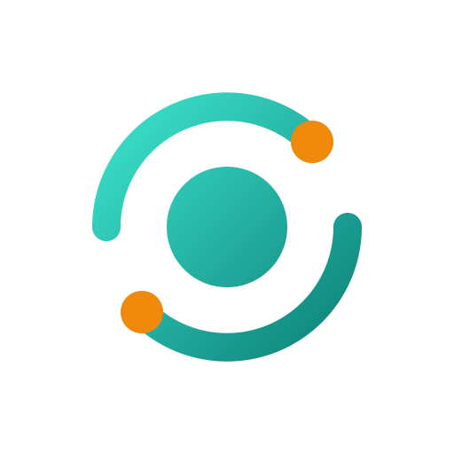

Platform white-label perbankan korporasi berbasis JDK 25 & Spring Boot 4.1.x, standar pesan keuangan ISO 20022 native, isolasi tenant bertingkat PostgreSQL RLS, serta integrasi BI-FAST, SNAP Open API, dan RTGS yang siap pakai.
Evaluasi menyeluruh mencakup arsitektur Spring Boot 4.1.x, isolasi multi-tenant PostgreSQL Kernel RLS, integritas neraca finansial, dan keselarasan 18 layar Bank Back Office.
Setiap modul telah dirancang dan terhubung interaktif dengan REST API backend serta database persisten. Klik kartu modul untuk membuka layar aplikasinya langsung.
Menjamin pemisahan hak akses mutlak dan kepatuhan terhadap kaidah pencegahan akses ilegal perbankan.
Autentikasi 3 tahap: Corporate ID, Kata Sandi, dan Token Response 8-digit.
🔐 Login Korporat (00) →Active Directory SSO Bank, verifikasi peran unit kerja, dan hak darurat Break-Glass.
🔐 Login Bank SSO (57) →Akses mandiri Supplier & Distributor terverifikasi NPWP dan Anchor Corporate.
🔐 Login Mitra SCF →Keypad angka PIN 6-digit dan simulasi pemindaian biometrik wajah FIDO2.
🔐 Login Mobile PIN →Menghubungkan perbankan dengan infrastruktur kliring nasional Bank Indonesia dan jaringan keuangan global secara efisien.
Penyelesaian pembayaran ritel real-time 24 jam dengan batas limit Rp 250 Juta per transaksi, resolusi proxy ID, dan penanganan cut-off otomatis.
Penyelesaian transaksi nilai besar (> Rp 100 Juta) tanpa hold berkepanjangan serta orkestrasi batch file kliring massal SKNBI terjadwal.
Standar transaksi lintas negara ISO 20022 MX dengan pelaporan devisa hasil ekspor LLD/DHE SDA terintegrasi di modul 47.
Sesuaikan parameter portofolio nasabah korporat bank Anda untuk memproyeksikan penghematan biaya operasional dan kenaikan Fee-Based Income (FBI) per tahun.
Dapatkan akses instan ke lingkungan sandbox Orivo lengkap dengan data sintetis untuk pengujian tim IT Steering Committee, Risk, dan Wholesale Banking.